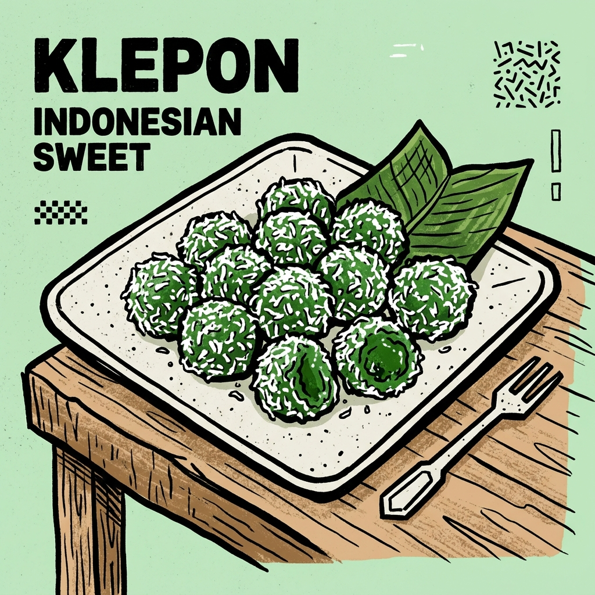

Klepon adalah salah satu jajanan pasar tradisional Indonesia yang paling populer. Berbentuk bulat kecil berwarna hijau, kue ini terbuat dari tepung beras ketan yang diberi pewarna alami dari daun pandan atau daun suji. Di bagian dalamnya, terdapat isian gula merah cair yang akan "meletus" dan meleleh di mulut saat digigit.
Setelah direbus hingga matang dan mengapung, klepon digulingkan di atas parutan kelapa muda kukus yang gurih. Perpaduan rasa kenyal dari ketan, manis legit dari gula merah, serta rasa asin-gurih dari kelapa membuat klepon menjadi hidangan penutup yang sangat disukai oleh berbagai kalangan.